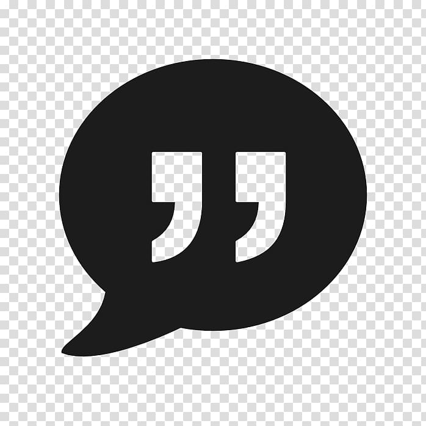

My Citation
Etape 1
Etape 2
Configuration du générateur :
Nombre de citation(s) généré(s) :
1
2
3
4
5
Thème :
Choisissez un thème
Le sport
L'amour
Merci de choisir un thème.
Générer
Réinitialiser
Configurez d'abord le générateur ci-dessus